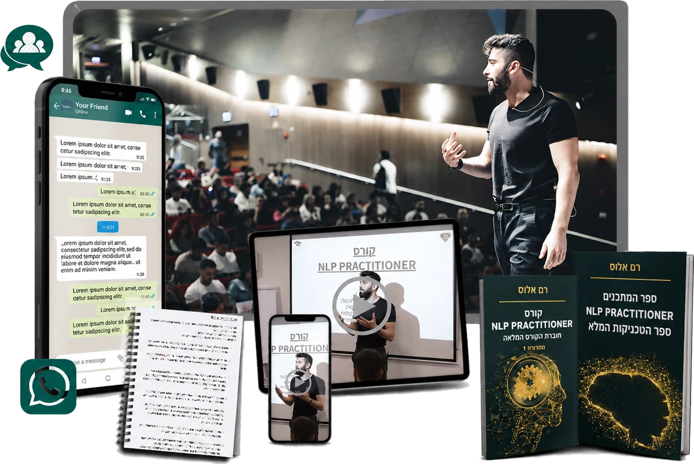
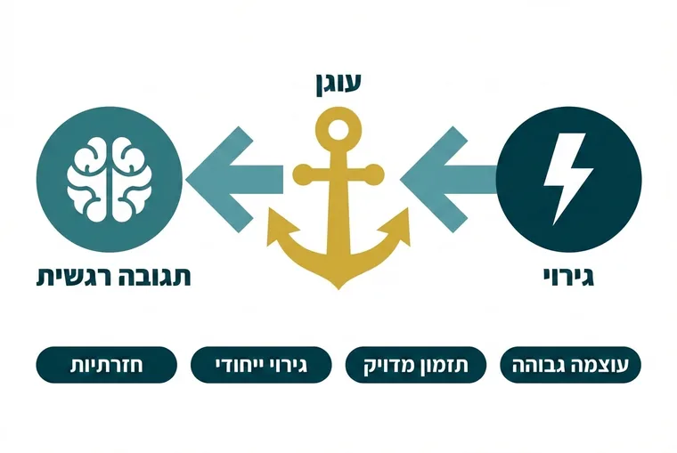
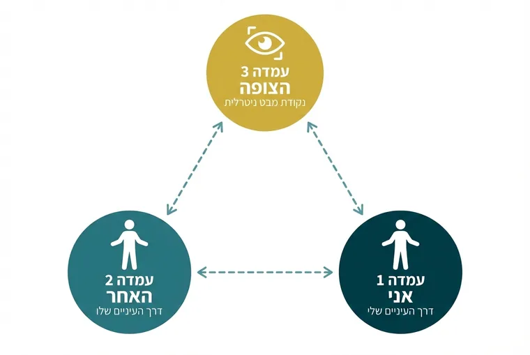
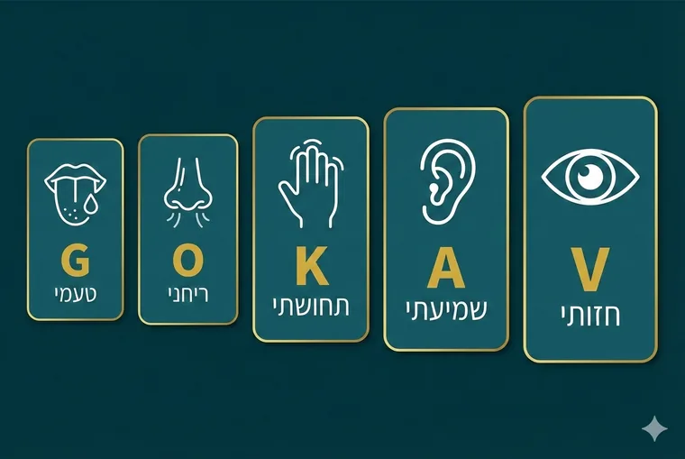
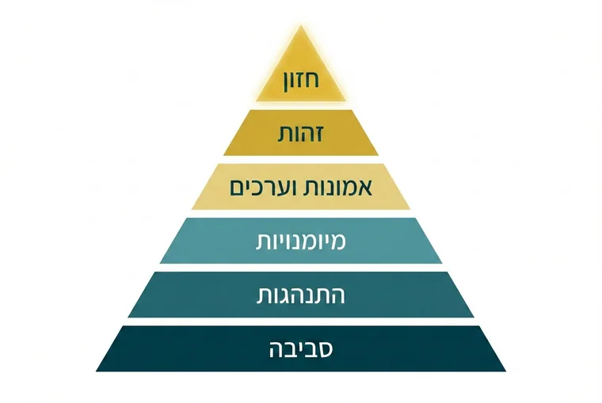
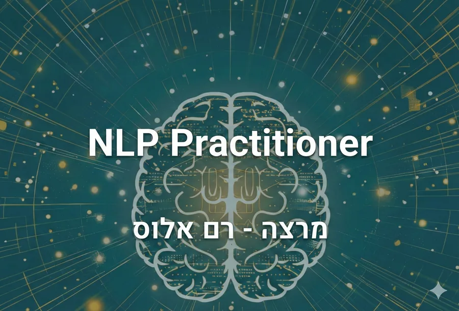
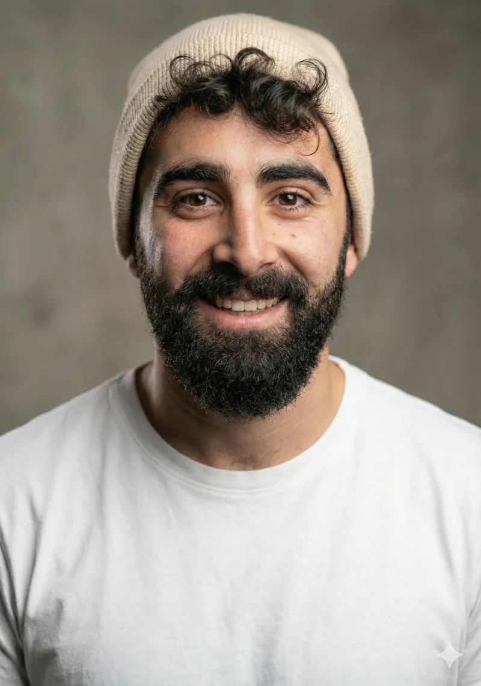
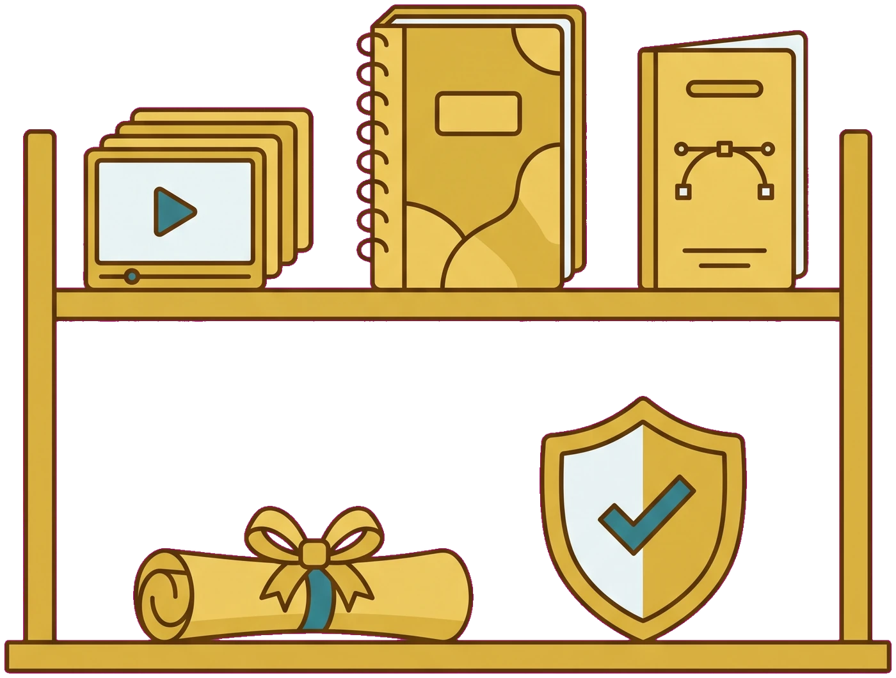

מעל 30,000 צפיות בקורס ומאות תלמידים עם הסמכה בינלאומית
היית משלם 197 ש״ח כדי לקבל גישה לקורס NLP Practitioner (מעל 20 שעות תוכן) עם תעודת הסמכה בינלאומית ולקבל עשרות כלים ליצירת פריצות דרך אצלך ואצל אחרים?
הקורס הזה נמכר בעבר ב-4,170 ש״ח, ברכישה אתם מקבלים 2 חוברות PDF של כל הקורס + כל הטכניקות + עוד בונוסים שווים.

מחיר ההכשרה כרגע: 197 ₪ חד־פעמי
4,170 ₪
197 ₪
תשלום חד־פעמי, גישה לקורס המלא ולחוברות הלימוד.
למי הקורס הזה נבנה
אם תמיד עניין אתכם להבין איך אנשים עובדים, למה אנחנו מגיבים כמו שאנחנו מגיבים, איך נוצרים דפוסים ואמונות, ואיך אפשר לעבוד איתם בצורה הרבה יותר מודעת, הקורס הזה נבנה בדיוק בשביל זה.
- לא צריך רקע קודם.
- לא צריך להיות מטפל.
- לא צריך להגיע עם שום ידע ב־NLP.
רק סקרנות אמיתית ורצון להבין יותר לעומק את מה שאני אוהב לקרוא לו: ״מערכת ההפעלה האנושית״
מה מחכה לכם בפנים
בתוך הקורס מחכות לכם 7 יחידות לימוד, עשרות פרקים, כלים פרקטיים, טכניקות, חוברת קורס מלאה ו״ספר מתכונים״ שמרכז את תהליכי ה־NLP שלב אחרי שלב. התכנים עצמם נעים ממודע ולא־מודע, שפת גוף וראפור, דרך מטרות, עמדות תפיסה, מערכות ייצוג וסמ״דים, ועד עוגנים, מסגור, אמונות וציר זמן.
ומי שרוצה לקחת את זה צעד נוסף קדימה יוכל גם לעבור את מסלול ההסמכה ולקבל תעודת NLP Practitioner בכפוף לעמידה בדרישות ההסמכה.

למה בכלל ללמוד NLP?
כי רובנו חיים עם מוח שאנחנו משתמשים בו כל היום, אבל אף אחד לא באמת לימד אותנו איך הוא עובד.
- למה לפעמים אנחנו יודעים בדיוק מה נכון לנו לעשות ועדיין לא עושים אותו.
- למה אדם אחד יכול להלחיץ אותנו במשפט אחד, ואדם אחר לא.
- למה יש פחדים שאנחנו מבינים לוגית שאין בהם היגיון, אבל הגוף עדיין מגיב.
- למה אנחנו חוזרים לאותם הרגלים.
- למה יש מחשבות שאנחנו לא מצליחים לשחרר.
- למה שני אנשים יכולים לעבור את אותו אירוע ולחוות אותו בצורה שונה לגמרי.
NLP הוא ניסיון להבין את הקשר שבין הדרך שבה אנחנו חושבים, השפה שבה אנחנו משתמשים, התחושות שאנחנו חווים וההתנהגות שנוצרת בעקבותיהן.
ובקורס אנחנו לא רק מדברים על זה. אנחנו מפרקים את זה. לומדים את המודלים. ומתרגלים את הכלים.
בחוברת הקורס עצמה הדגש הוא לא על צפייה פסיבית, אלא על למידה, בדיקה, תרגול והתנסות.
אולי אחד הדברים האלה מוכר לכם
- אתם יודעים שאתם רוצים לעשות שינוי, אבל מרגישים שמשהו בפנים מושך אתכם אחורה.
- אתם מנסים להבין למה אנשים מסוימים מפעילים אתכם רגשית כל כך מהר.
- אתם מוצאים את עצמכם שוב ושוב באותם דפוסים בזוגיות, בעבודה או מול עצמכם.
- אתם רוצים ללמוד לשאול שאלות יותר טובות ולהבין אנשים מעבר למה שהם רק אומרים במילים.
- אתם מסתקרנים מפסיכולוגיה, תת־מודע, הרגלים, אמונות והתנהגות אנושית.
- או שפשוט תמיד עניין אתכם ללמוד NLP, אבל אף פעם לא באמת נכנסתם לזה.
אם כן, אתם כנראה בדיוק הקהל שבשבילו בניתי את הקורס הזה.
אז מה באמת לומדים שם?
לא רציתי ליצור קורס שזורק עליכם רשימה של מושגים. הקורס בנוי כמו מסע. בכל חלק אנחנו מוסיפים עוד שכבה להבנה של עצמנו ושל האדם שמולנו.
גוררים הצידה כדי לעבור בין החלקים ←
להכיר את מערכת ההפעלה
כאן מתחילים מהבסיס. מבינים מה זה בכלל NLP, איך המודע והלא־מודע משתלבים בדרך שבה אנחנו פועלים, ואיך חלק גדול מהתקשורת בין אנשים בכלל לא מתרחש דרך המילים.
- מבוא ל־NLP, היסטוריה והנחות יסוד
- עקרונות היסוד של NLP
- המודע והלא־מודע
- הדרך שבה אנחנו מפרשים את העולם
- שפת גוף ותקשורת לא מילולית
- חדות חושים וקליברציה
- Rapport, יצירת חיבור וכימיה בתקשורת
להבין אנשים וקונפליקטים
לפעמים אנחנו תקועים בתוך סיטואציה פשוט כי אנחנו מסוגלים לראות אותה רק מזווית אחת. כאן נלמד לצאת לרגע מהראש שלנו ולראות דברים אחרת.
- רמות לוגיות
- עמדות תפיסה
- איך להיכנס לנקודת המבט של האדם שמולכם
- איך להסתכל על קונפליקט גם מנקודת מבט ניטרלית
- מסע בין עמדות
- מסע בין יועצים
ללמוד לשאול שאלות שבאמת פותחות משהו
יש משפט שאני מאוד אוהב: איכות התשובות שאנחנו מקבלים תלויה הרבה פעמים באיכות השאלות שאנחנו יודעים לשאול.
- הכללות
- השמטות
- עיוותים
- ניסוחים מעורפלים
- הנחות שמסתתרות בתוך השפה
- Outcome
- מודל SMART
- מודל וולט דיסני
המטרה היא לא רק להוסיף שאלות. המטרה היא לדעת לשאול את השאלה שעוזרת לאדם, או לעצמכם, לראות משהו שלא ראיתם קודם.
השפה של המוח
זה אחד החלקים שהכי פתחו לי את הראש כשאני למדתי NLP. כי אנחנו לא חווים את המציאות ישירות. אנחנו יוצרים בתוכנו ייצוגים של המציאות. תמונות. קולות. תחושות. זיכרונות.
- מערכות ייצוג
- סמ״דים / Submodalities
- איך אנחנו מקודדים חוויות בראש
- Map Across
- Swish
- שינוי הרגלים והתניות
- פרוטוקולים מסורתיים לעבודה עם פחדים ותגובות אוטומטיות
למה אנחנו עושים דברים שאנחנו בכלל לא רוצים לעשות?
לפעמים אדם אומר: אני יודע שזה לא טוב לי. ועדיין עושה את זה. ופה מתחיל חלק מאוד מעניין.
- צרכים אנושיים
- פרשנות ומשמעות
- Framing
- Preframing
- מודל ה״חלקים״
- כוונה חיובית מאחורי התנהגות
- מסגור מחדש ב־6 שלבים
להבין רגשות ולעבוד עם State
הרגש שלנו לא נוצר משום מקום. יש תהליכים שמשפיעים עליו. וכשמכירים אותם, אפשר להתחיל לעבוד איתם בצורה הרבה יותר מודעת.
- איך State נוצר
- איך זיכרון וייצוג פנימי משפיעים על תחושה
- איך שפת גוף משפיעה על מצב פנימי
- איך דיבור פנימי משפיע על הרגש
- יצירת עוגנים
- הערמת עוגנים
- מיטוט עוגנים
- כלים לשינוי מצב רגשי
אמונות וציר הזמן
החלק האחרון נכנס עמוק יותר. כי הרבה פעמים ההתנהגות שאנחנו רואים מבחוץ היא רק הקצה. מתחתיה יש אמונות.
- מהי אמונה
- סוגי אמונות
- איך אמונות נוצרות
- איך לזהות אמונות מגבילות דרך שפה ושאלות
- איך לעבוד עם אמונות בעזרת הכלים שלמדנו לאורך הקורס
- ציר זמן
- שינוי היסטוריה אישית
שבעת החלקים בנויים כתהליך מסודר, אחד על גבי השני, עד לחלק האחרון שסוגר את המסע.
וזה לא נגמר רק בסרטונים
אחד הדברים שחשובים לי בקורס הזה הוא שלא תצטרכו לראות טכניקה ואז לנסות לזכור: רגע, מה היה השלב הבא?
לכן כחלק מהקורס אתם מקבלים גם את ״ספר המתכונים״ של NLP Practitioner, חוברת נפרדת שמרכזת את הטכניקות בצורה מסודרת ושלבית.
הטכניקות שבתוך ספר המתכונים
מתוך חומרי הקורס




ויש גם חוברת קורס מלאה
לא סיכום של שני עמודים. החוברת הראשית בנויה על פני עשרות פרקים ומלווה את 7 יחידות הלימוד. אפשר ללמוד איתה תוך כדי הקורס, לסמן, לחזור לנושאים ולהשתמש בה גם אחר כך.

ועכשיו לשאלה המתבקשת: למה 197 ₪?
זו כנראה השאלה שהייתי שואל בעצמי אם הייתי מגיע לדף הזה מבחוץ. אז הנה הסיפור.
פעם מכרתי את הקורס הזה ב־4,170 ₪. אחר כך, בשלב מסוים, החלטתי לעשות משהו קצת אחר. העליתי אותו ליוטיוב בחינם.
המטרה שלי הייתה פשוטה: רציתי שכמה שיותר אנשים בישראל ייחשפו ל־NLP ויכירו את התוכן הזה. ומאז הקורס והתכנים צברו יחד מעל 30,000 צפיות.
קיבלתי הודעות מאנשים. תגובות. אנשים שסיפרו לי מה הם הבינו על עצמם. ומה השתנה להם בעקבות התוכן.
אבל לצד כל הדברים הטובים, שמתי לב למשהו. כשאנחנו לא משקיעים כלום, הרבה יותר קל לנו גם לא להשקיע בעצמנו.
אנשים היו שומרים את הסרטונים לאחר כך. מתחילים שיעור. מדלגים. נעלמים. חוזרים אחרי חודש. ואני מבין את זה. גם אני מתייחס אחרת לדבר ששילמתי עליו מאשר לסרטון שקפץ לי ביוטיוב.
אז החלטתי לעשות משהו באמצע. לא לחזור ל־4,170 ₪. אבל גם לא לתת את כל ההכשרה בחינם.
197 ₪. סכום שאני מאמין שכמעט כל מי שבאמת רוצה ללמוד את התחום יכול לעמוד בו, אבל מספיק כדי להגיד: אוקיי. נרשמתי. עכשיו אני באמת עושה את זה.
ואם כבר עושים את זה, אפשר גם לצאת עם תעודה
מי שרוצה רק ללמוד בשביל עצמו, מעולה. אין שום חובה להפוך את זה למקצוע.
אבל אם חשוב לכם גם לסיים עם תעודת NLP Practitioner, יש אפשרות לעבור את מסלול ההסמכה.
חשוב לי מאוד להיות ברור כאן: לא קונים ממני תעודה ב־197 ₪. מקבלים גישה להכשרה. לומדים. עומדים בדרישות ההסמכה. ורק מי שמשלים אותן מקבל את התעודה.
חוסם פרסום
מי אני ולמה בכלל יצרתי את הקורס הזה?
היי חברים,
אם הגעתם עד לפה, כנראה שגם אצלכם יש איזושהי סקרנות להבין יותר לעומק איך אנשים עובדים.
אצלי זה התחיל בערך בגיל 21. תמיד עניינו אותי פסיכולוגיה, המוח, התנהגות אנושית, ולמה אנשים עושים את מה שהם עושים.
בסוף השירות הצבאי נחשפתי לטוני רובינס. ראיתי איך הוא עובד עם אנשים בסמינרים שלו, והתחלתי להבין שחלק גדול מהכלים שהוא משתמש בהם מגיע מעולמות ה־NLP. וזה תפס אותי.

אז הלכתי ללמוד. התחלתי מ־NLP Practitioner. משם המשכתי ל־NLP Master. בהמשך פתחתי קליניקה, התחלתי ללמד, הקמתי בית ספר והמשכתי להגיע לסמינרים של טוני רובינס ברחבי העולם.
אבל מעבר לכל התעודות והלימודים, NLP שינה קודם כל אותי.
הוא עזר לי להבין הרבה יותר טוב את עצמי. לראות איפה אני מגיב מתוך פחד. איפה אני מייצר לעצמי סיפורים. איפה אני תקוע בדפוס. איך אני מתקשר עם אנשים. ואיך אפשר להסתכל אחרת על דברים שפעם נראו לי מאוד מוחלטים.
בשנים שאחרי מצאתי את עצמי מגשים לא מעט מטרות שהיו חשובות לי, בזוגיות, בכסף, בקשרים עם אנשים, בביטחון שלי ובדרך שבה אני חי את החיים שלי.
אני לא חושב ש־NLP הוא קסם. ואני גם לא רוצה שתאמינו באופן עיוור לכל דבר שאני אומר לכם. אפילו בחוברת הקורס אני מבקש מהתלמידים לבדוק, להתנסות ולחקור את הכלים בעצמם.
אבל אני כן חושב שהשיטה הזאת נתנה לי שפה וכלים שלא היו לי קודם. וזו בדיוק הסיבה שבסוף החלטתי ללמד אותה.
רם אלוס

אבל חשוב לי להגיד גם מה הקורס הזה לא
מה הוא כן עושה?
- נותן לכם בסיס מאוד רחב בעולם ה־NLP
- מלמד את המודלים המרכזיים
- נותן לכם טכניקות
- נותן לכם שפה להבין בעזרתה מחשבות, רגשות, תקשורת ודפוסים
ומשם, מה שתעשו עם זה תלוי מאוד בכמה באמת תתרגלו ותיישמו.
מה מקבלים ב־197 ₪?

קורס NLP Practitioner מלא
7 יחידות לימוד עם עשרות פרקים.
חוברת NLP Practitioner
חוברת שמלווה את כל הקורס.
ספר המתכונים
הטכניקות מסודרות בצורה פרקטית, שלב אחרי שלב.
אפשרות למסלול הסמכה
למי שרוצה לסיים עם תעודת NLP Practitioner ועומד בדרישות.
30 יום אחריות
כדי שתוכלו לבדוק בעצמכם אם אתם מתחברים.
30 יום עליי
אני לא רוצה שתצטרכו לנחש אם הקורס מתאים לכם. אז הנה הדרך הכי פשוטה לפתור את זה.
תירשמו. תיכנסו. תראו את השיעורים. תפתחו את החוברות. ותתחילו ללמוד.
יש לכם 30 יום לבדוק את הקורס בעצמכם. אם לא התחברתם לתוכן או שפשוט הבנתם שזה לא בשבילכם, תכתבו לנו במסגרת 30 ימי האחריות ותקבלו את כספכם בחזרה בהתאם לתנאי האחריות.
אין לי עניין שמישהו יישאר בקורס שהוא לא רוצה להיות בו. אתם בודקים את הקורס. הסיכון עליי.
אבל רגע... זה באמת רק 197 ₪?
כן. לא 197 ₪ לחודש. לא תשלום ראשון מתוך סדרה. לא 197 ואז לפתוח כל פרק בנפרד.
197 ₪. תשלום חד־פעמי.
למי הקורס מתאים?
- אם אתם מתחילים לגמרי ורוצים להכיר NLP בצורה מסודרת. כן.
- אם אתם מתעניינים בהתפתחות אישית ורוצים להבין את עצמכם יותר. כן.
- אם אתם רוצים לשפר תקשורת ולהבין אנשים. כן.
- אם אתם שוקלים בעתיד להיכנס לעולם האימון, הליווי או ה־NLP, הוא יכול להיות נקודת התחלה מצוינת.
אם אתם רוצים פשוט תעודה בלי ללמוד ולתרגל, זה פחות המקום.
כמה שאלות שסביר להניח שעוברות לכם בראש
צריך ידע קודם?
לא. הקורס מתחיל מהבסיס ונבנה בהדרגה.
אני חייב לרצות להיות מטפל?
ממש לא. הרבה מהתוכן רלוונטי קודם כל לחיים האישיים, לתקשורת ולהיכרות עמוקה יותר עם עצמנו.
מקבלים תעודה?
מי שבוחר במסלול ההסמכה ומשלים את דרישותיו יכול לקבל תעודת NLP Practitioner.
לפני פרסום הדף יש להוסיף כאן את הגוף המנפיק ואת דרישות ההסמכה המדויקות.
הקורס הוא טיפול?
לא. זהו קורס לימודי ב־NLP ואינו מחליף טיפול פסיכולוגי, פסיכיאטרי או רפואי.
יש החזר כספי?
כן. יש 30 ימי אחריות בהתאם לתנאי האחריות.
זה באמת אותו קורס שנמכר בעבר ב־4,170 ₪?
כן. זה הסיפור שמאחורי ההחלטה להנגיש אותו היום במחיר של 197 ₪.
למה לא פשוט לראות את התוכן החינמי?
אפשר. ואם זה מה שמתאים לכם, באמת שאין בעיה. הסיבה שיצרתי מחדש מסגרת בתשלום היא כדי לתת ללמידה מקום מסודר, רציני ומחייב יותר, יחד עם החוברות ואפשרות ההסמכה.
לפני שאתם ממשיכים הלאה...
אני רוצה להגיד משהו קטן. לא חסר היום תוכן. יש יוטיוב. יש פודקאסטים. יש טיקטוק. יש ספרים. יש אינסוף סרטונים על פסיכולוגיה והתפתחות אישית.
הבעיה היא בדרך כלל לא שאין לנו עוד מידע. הבעיה היא שהמידע נשאר מידע. רואים. מתלהבים. שומרים. וממשיכים לחיים.
הקורס הזה הוא הזמנה לעצור רגע ולעשות משהו קצת אחרת. לקחת נושא אחד. ללמוד אותו בצורה מסודרת. לתרגל. להתבונן בעצמכם. ולראות מה מתוך זה באמת עובד עבורכם.
אם אתם מרגישים שכבר הרבה זמן בא לכם להבין את העולם הזה, אולי פשוט הגיע הזמן להתחיל.
NLP PRACTITIONER
- 7 יחידות לימוד
- עשרות פרקים
- חוברת קורס מלאה
- ספר טכניקות
- אפשרות להסמכה
- 30 יום אחריות
בעבר: 4,170 ₪
197 ₪
תשלום חד־פעמי · 30 יום אחריות